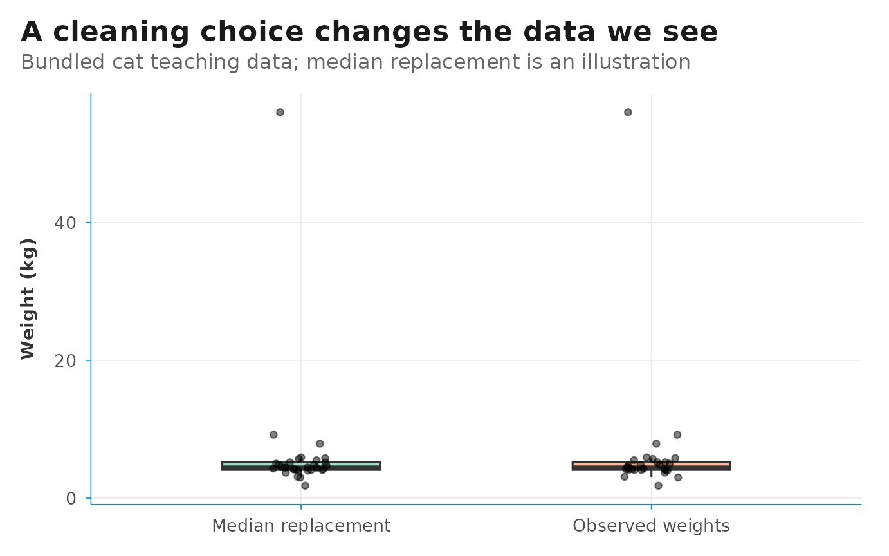

library(cataScience)
library(readxl)
library(dplyr)
library(tidyr)
library(stringr)
library(ggplot2)
library(DSIR)
这个 20–30 分钟的练习沿着 Import → Cleaning → Visualize 展开，目标是解释一项清理决策及其对结论的影响。首次练习使用内置猫咪数据。
应用操作是主要学习路线。以下 R 代码为可选的复现示例，读取同一个工作簿，但不会修改正在运行的应用会话。
1. 导入并检查
在 Import 的 Dataset 1 下点击 Or use the example data，修改之前先回答：
- 一行代表什么？哪一列识别一只猫？
- 哪些变量是数值、文本或逻辑类型？
- 哪里有缺失值或不一致的标签？
在 R 中读取同一个工作簿：
example.file <- system.file(
"app", "data", "cat-dirty-data.xlsx", package = "cataScience"
)
cat.data <- read_excel(example.file)
head(cat.data)
#> # A tibble: 6 × 8
#> id name gender length_cm height_cm weight_kg age_years neutered
#> <chr> <chr> <chr> <dbl> <dbl> <dbl> <dbl> <lgl>
#> 1 a01 Dazhuang Male 72.3 38.5 9.2 3 FALSE
#> 2 a02 Maomao Male 54.1 32.3 3.1 8 TRUE
#> 3 a03 Mimi F 42.4 28.4 5.5 1 TRUE
#> 4 a04 Shane Male 47.1 29.8 7.9 1 FALSE
#> 5 a05 Joshua Female 45.4 32.6 NA 8 TRUE
#> 6 a06 Mark Male 36.9 27 4.1 7 FALSE
missing.summary <- tibble(
variable = names(cat.data),
n_missing = vapply(cat.data, function(x) sum(is.na(x)), integer(1))
)
missing.summary
#> # A tibble: 8 × 2
#> variable n_missing
#> <chr> <int>
#> 1 id 0
#> 2 name 0
#> 3 gender 0
#> 4 length_cm 0
#> 5 height_cm 0
#> 6 weight_kg 3
#> 7 age_years 0
#> 8 neutered 0单独统计重复标识符。重复可能源于重复录入，也可能是第二次真实观测，删除前应核对来源。
2. 比较缺失数据处理方法
在 Cleaning → Missing data → Deal 中，可以删除行、上下填充、用均值或中位数替换；本地安装 VIM 后还可使用 kNN。先选定要修改的变量，检查结果后再点击 Apply cleaning。
对 weight_kg
比较删除缺失行与中位数替换。每种方法之间使用 Reset to original
data。观察还剩多少只猫，以及体重分布如何变化。
以下代码只修改一个变量，并保留原始数据：
complete.weights <- cat.data %>%
filter(!is.na(weight_kg))
median.filled <- cat.data %>%
mutate(weight_kg = replace_na(weight_kg, median(weight_kg, na.rm = TRUE)))
comparison.data <- bind_rows(
"Observed weights" = complete.weights,
"Median replacement" = median.filled,
.id = "method"
)
method.summary <- comparison.data %>%
summarise(
n_cats = n(),
mean_weight_kg = mean(weight_kg),
median_weight_kg = median(weight_kg),
.by = method
)
method.summary
#> # A tibble: 2 × 4
#> method n_cats mean_weight_kg median_weight_kg
#> <chr> <int> <dbl> <dbl>
#> 1 Observed weights 28 6.55 4.45
#> 2 Median replacement 31 6.35 4.45均值和中位数替换适合课堂比较，但用单个值填补缺失会低估不确定性。正式分析中，如相关假设合理，可考虑
mice::mice()
多重插补，并合并各次插补后的分析估计。插补值不是新观察到的数据。
上下填充假定相邻行之间存在关系且顺序有意义；kNN 依赖可比较的变量及合适的尺度。任何一种操作都不能单凭结果确认缺失产生的原因。
3. 调查异常值
在 Cleaning → Outliers 查看箱线图和被标记变量。应用使用四分位距（IQR）规则：
标记说明数值值得检查，不能证明它错误。应核查单位、原始记录及所属群体。
weight.quartiles <- quantile(cat.data$weight_kg, c(0.25, 0.75), na.rm = TRUE)
weight.iqr <- diff(weight.quartiles)
lower.fence <- unname(weight.quartiles[1] - 1.5 * weight.iqr)
upper.fence <- unname(weight.quartiles[2] + 1.5 * weight.iqr)
flagged.weights <- cat.data %>%
filter(!is.na(weight_kg), weight_kg < lower.fence | weight_kg > upper.fence)
flagged.weights %>% select(id, name, weight_kg)
#> # A tibble: 4 × 3
#> id name weight_kg
#> <chr> <chr> <dbl>
#> 1 a01 Dazhuang 9.2
#> 2 a04 Shane 7.9
#> 3 a08 Stanley 56
#> 4 a28 Kathryn 1.8比较 Remove extreme values 与 Winsorize extreme values。删除会改变样本；缩尾保留记录，但把极端值限制在边界。应记录规则及受影响的观测。
4. 统一文本标签
在 Cleaning → Text
选择字符变量并比较大小写转换。只改变大小写并不能让 F 与
Female
自动成为同一类别，还需要检查实际类别并确定映射规则。
sort(unique(cat.data$gender))
#> [1] "F" "Female" "M" "Male"
standardized.data <- cat.data %>%
mutate(
gender_key = str_to_lower(str_trim(gender)),
gender = case_when(
gender_key %in% c("f", "female") ~ "Female",
gender_key %in% c("m", "male") ~ "Male",
TRUE ~ gender
)
) %>%
select(-gender_key)
standardized.data %>% count(gender, sort = TRUE)
#> # A tibble: 2 × 2
#> gender n
#> <chr> <int>
#> 1 Female 16
#> 2 Male 15这是应用外的 R 配套练习。应用中的 Text 页提供大小写转换，不会自动执行这项自定义映射。
5. 关联前检查键
准备好后加载 Dataset 2，进入 Cleaning → Merge，选择对应键和关联方式，再检查结果。支持左、右、内和全关联。
先确认键是否在预期的观测层级上唯一。如果同一个键在两侧都重复，关联可能成倍增加记录。比较关联前后的行数，检查未匹配键；行数变多并不自动意味着数据更完整。
6. 用图表解释决策
在 Visualize 中，对比原始数据与应用清理方法后的数据。体重分布可用箱线图或直方图，两个数值变量的关系可用散点图。
以下图表比较观测体重与中位数替换：
ggplot(comparison.data, aes(x = method, y = weight_kg, fill = method)) +
geom_boxplot(width = 0.45, outlier.shape = NA, alpha = 0.6) +
geom_jitter(width = 0.08, height = 0, alpha = 0.5, size = 1.5) +
scale_fill_brewer(palette = "Set2", guide = "none") +
theme_dsi() +
labs(
title = "A cleaning choice changes the data we see",
subtitle = "Bundled cat teaching data; median replacement is an illustration",
x = NULL, y = "Weight (kg)"
)
解释图中的差异前，先说明分母、哪些观测被修改，以及仍有哪些局限。图表看起来整洁，并不表示结论可靠。
7. 讨论与检验理解
请每位学员补充三句话：
- 我修改了……，因为……。
- 这项修改对样本或分布的影响是……。
- 使用这个结果之前，我仍需核查……。
在 Quiz 中选择练习涉及的主题并点击 Apply topics and restart。结合答案解释重新讨论决策，不只关注分数。
较长的课程可继续学习 Statistics 或 AI 辅助分析。课程安排和审阅练习见培训指南。